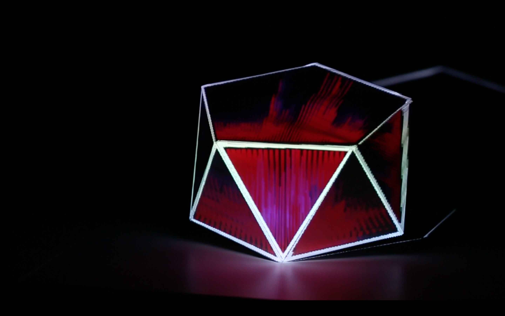
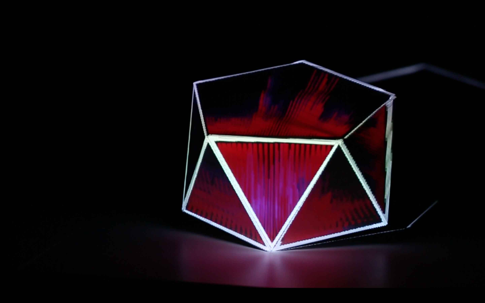

Marco Weibel
Design | Visuals | Interaction | Music Curation
Currently Based In NYC
marco.o.weibel[at]gmail[dot]com


Marco Weibel
Design | Visuals | Interaction | Music Curation
Currently Based In NYC
marco.o.weibel[at]gmail[dot]com

Using processing, and its FFT library, I made a sketch that would analyze audio waveforms from a specific song and create audio reactive visuals. Syphon was then used to send the information over into MadMapper.
The outcome was an Audio-reactive projection mapping of a 3d object. The focus of the mapping was to texturize as well as augment the object. Through this, I shot a video and used the footage to be cut into a promotional video for forthcoming release by dutch artist Beatsofreen, titled Dimensions. The EP is scheduled to be released on record label Darker Than Wax mid June.
For more information on this project and process, please check out this link here.
Video link soon!
 
